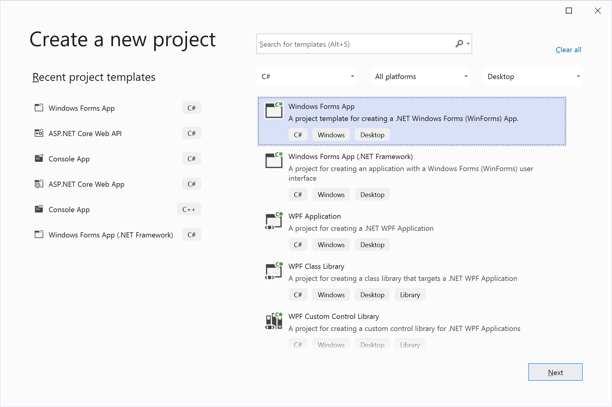
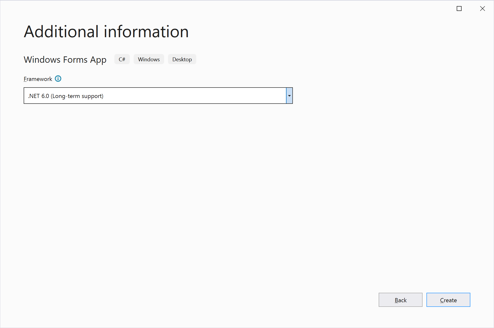
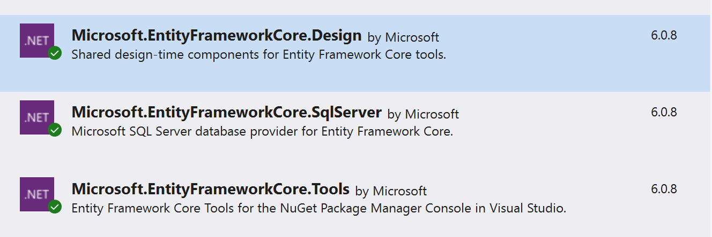
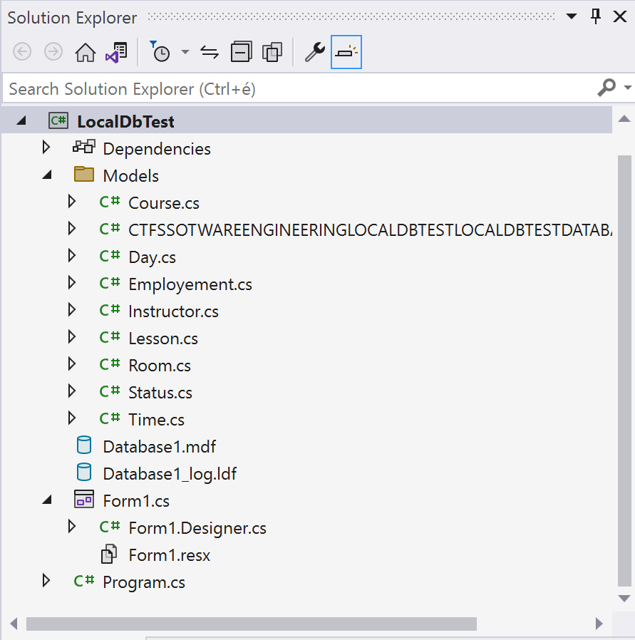
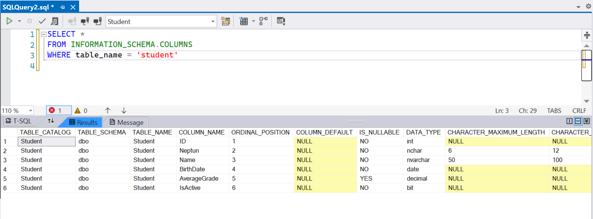
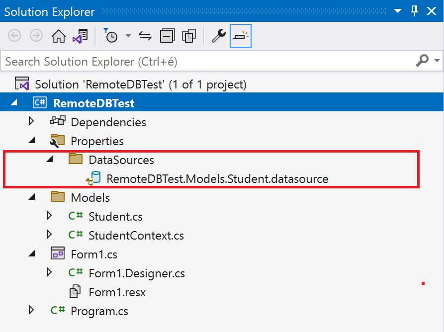
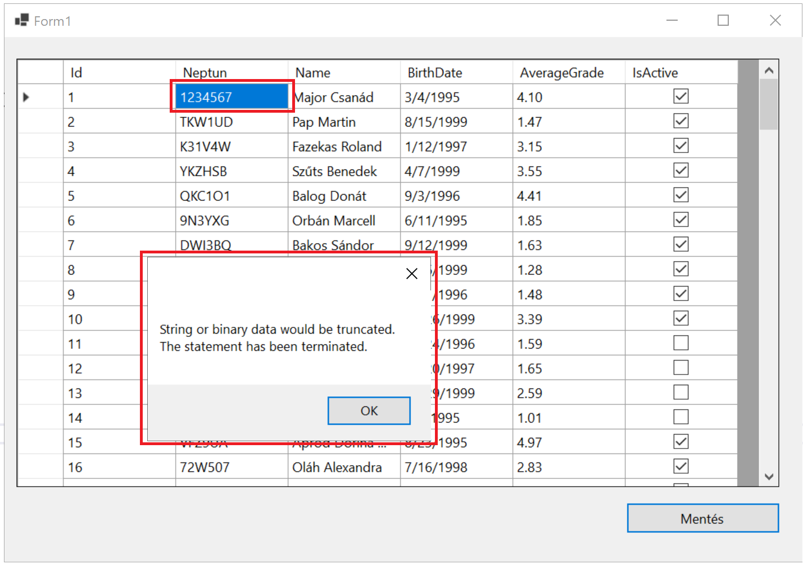

Távoli adatbázis elérése C# alkalmazásból
A gyakorlat célja
Ezen a gyakorlaton olyan alkalmazást építsünk, amely képes
- egy távoli SQL szerveren tárolt adatbázishoz csatlakozni,
- onnét egy tábla adatait letölteni, majd
- egy űrlapon elhelyezett rácsban megjeleníteni.
A félév során az itt bemutatott módon történik majd a kliens és az SQL server közötti adatmozgatás. Ez a félév legösszetettebb feladata!
Követelmények
A gyakorlat teljesítéséhez a Visual Studio 2022-es változata és a .NET 6 SDK szükséges.
SQL adatbázis adatai
| Szerver | bit.uni-corvinus.hu |
| Felhasználónév | hallgato |
| Jelszó | Password123 |
| Adatbázis | Student |
Important
A bit.uni-corvinus.hu domain alatt futó SQL szerver csak VPN alól érhető el!!!
Videók
Az alábbi videókat érdemes lehet a feladatmegoldás előtt megnézni.
(!Vid) 1. rész
(!Vid) 2. rész
(!Vid) 3. rész
(!Vid) 4. rész
A megoldás lépései
1. Windows Forms App létrehozása .NET 6 alatt
(+/-) Hozz létre egy Windows Forms App típusú alkalmazást Visual Studio-ban. A Solution és a Project neve tetszőleges, a példában a RemotelDbTest nevet használjuk.

Warning
Windows Forms App (.NET Framework) template a régi .NET Framework 4.7 vagy 4.8 keretrendszert használja, nem a .NET 6.0-át! Ne keverd össze! A .NET 6-ban teljesen újra írták a Windows Forms kódját és a szerkesztőt is. Gyakori hiba hogy C# projekt helyett Visual Basic projekt készül.
Ha jól csináltad ez látszik:

2. Adatbázis kezelése a Server Explorer panelben
2.1 Csatlakozás Server Explorer-ben az adatbázishoz
Warning
A Server Explorer-nek semmi köze nincs az épp megnyitott projekthez. A Visual Studio egy integrált fejlesztőkörnyezet, és mint ilyen rendelkezik beépített funkcióval alapvető adatbázis műveletek elvégzésére. A fejlesztőnek így nem kell elhagyni a VS-t, és más alkalmazást telepíteni, ha egyszerű adatbázis műveleteket szeretne végrehajtani. A Server Explorer ablakban akkor is csatlakozhatunk adatbázishoz, ha a Visual Studio-ban éppen nincsen projekt megnyitva.
(+/-) A Server Explorer-ben vegyél fel egy kapcsolatot a bevezetésben megadott adatbázishoz!
Ha nincs meg a Server Explorer panel, a Ctrl+Alt+S vagy a
view/Server Explorermenüpont segítségével lehet bekapcsolni.A Server Explorer
Connect To Databeseikonjával lehet felvenni az új adatbáziskapcsoaltot.

A szerver neve magáért beszél.
A
Windows Authenticationazt jelenti, hogy a kliens a Windows-ba történő bejelentkezéshez használt credential-ökkel próbálja azonosítani magát a kliens az SQL szerver felé. Ez azért jó, mert az SQL Server képes az Active Directory-t használni a jogosultságok ellenőrzéséhez anélkül, hogy felhasználói jelszavakat kellene felvinni. Lehetne jogosultságot adni egyszerre az összes diáknak. De nálunk nem ez a helyzet.Mi az
SQL Server Authenticationhasználjuk, ahol az SQL szerveren tárolt felhasználónév / jelszó párosokkal történik az azonosítás.A
Save passwordpipát fejlesztéskor érdemes lehet betenni.Az adatbázis nevét is érdemes kitölteni, legördülő dobozból nem mindig választható ki. Az SQL Server-en engedélyezhető vagy tiltható az adatbázisok listázása -- ez a beállítás általában attól függ hogy mennyire paranoid az adatbázisgazda :)
Ha a
Test Connectionnem megy, érdemes ellenőrizni a VPN kapcsolatot.
2.2 Connection String kinyerése
Mint ahogy arról már korábban esett szó, a Server Explorer-nek semmi köze nincs az éppen megnyitott projekthez. Ahhoz hogy olyan C# programot tudjunk írni, ami csatlakozik a távoli adatbázishoz, később szükségünk lesz az úgynevezett connection string-re. (Nem most, de úgy tűnik logikusnak, hogy itt tegyünk említést róla.)
A connection string-ben mező--érték párokat találunk, ez az információ szükséges egy adatbázisba bejelentkezéshez, és egy meghatározott adatbázis eléréséhez. A következő lépésben erre a connection string-re lesz szükségünk ahhoz, hogy legeneráljuk az adatbázis eléréséhez szükséges C# osztályokat.
Ha a Server Explorer-ben az adatbázisra kattintasz, a Properties ablakban (jobb lent) megjelenik a connection string:
Data Source=bit.uni-corvinus.hu;Initial Catalog=Student;Persist Security Info=True;User ID=hallgato;Password=***********
(+/-) Jegyezd meg, hogy hol találod a connection string-et később kelleni fog!
3. "Reverse engineering"
A Microsoft-os terminológiában Revrese Engineering-nek hívjuk azt a folyamatot, ami egy meglévő adatbázis séma alapján legenerálja azokat az osztályokat, amelyek leképezik az adatbázist táblákat, a köztük lévő kapcsolatokat, illetve lehetőséget biztosítanak adatok mozgatására a kliens és a szerver között.
Emlékeztetőül az előadáshoz: két megközelítés létezik. A database first megközelítésben egy már létező, SQL szerveren felépített adatbázis séma alapján generáljuk le azokat az osztályokat, melyek az adatbázis eléréséhez szükségesek. A code first megközelítésben először az osztályokat írjuk meg mondjuk C#-ban, majd ez alapján generálunk SQL adatbázis sémát. A kurzus során végig a database first megközelítést használjuk.
3.1 NuGet csomagok hozzáadása a projekthez
(+/-) Nyisdmeg a NuGet csomagkezelőt, és add az alábbi csomagokat a projekthez:


A Microsoft.EntityFrameworkCore.Tools és a Microsoft.EntityFrameworkCore.SqlServer a NuGet konzolán keresztül ezzel a két paranccsal is hozzáadható a projekthez:
Install-Package Microsoft.EntityFrameworkCore.SqlServer
Install-Package Microsoft.EntityFrameworkCore.Tools
3.2 Osztályok generálása
Sajnos .NET Core alatt (még) nem áll rendelkezésre Visual Studio-ba épített grafikus eszköz és varázsló az adatbázis sémája alapját leképező C# osztályok előállítására. (3rd party modul létezik.) Ezt is a Package Manager Console-ból kell megoldani parancssorból, de nem olyan veszélyes, mint első hallásra tűnik. (Tools/NuGet Package Manager)
A Scaffold-DbContext parancs használata egyszerű, meg kell neki adni a Connection String-et, és a projekten belül azt a mappát, ahova dolgozhat. A mappa neve tipikusan a Models, ha csak egy adatbázisunk van.
Scaffold-DbContext "[Connection String]" Microsoft.EntityFrameworkCore.SqlServer -OutputDir [Mappa]
A mi esetünkben, miután a kicsillagozott jelszót újra megadtuk:
Scaffold-DbContext "Data Source=bit.uni-corvinus.hu;Initial Catalog=Student;Persist Security Info=True;User ID=hallgato;Password=Password123" Microsoft.EntityFrameworkCore.SqlServer -OutputDir Models
Important
Ha a projektet nem lehet lefordítani, amikor kiadjuk a Scaffold-DbContext parancsot, csak egy mérsékelten beszédes "Bulid Failed." üzenetet kapunk. Ha nem ez a baj, használható a parancs végére a -Verbose kapcsoló.
Note
Ha a Scaffold-DbContext lejárt tanusítványra panaszkodik, bővítsük a connection stringet a TrustServerCertificate=True beállítással!
(+/-) Állítsd össze a Scaffold-DbContext parancsot saját connection string-ed alapján, majd futtasd a Package Manager Console-ban.
Ezután meglelenik a SolutionExplorer-ben egy Models mappa benne a fájlokkal:

A Students osztály
Érdemes megnézni a Student.cs-t -- az SQL szerveren lévő Student tábla leképezését tartalmazza:
using System;
using System.Collections.Generic;
namespace RemoteDBTest.Models
{
public partial class Student
{
public int Id { get; set; }
public string Neptun { get; set; } = null!;
public string Name { get; set; } = null!;
public DateTime BirthDate { get; set; }
public decimal? AverageGrade { get; set; }
public bool IsActive { get; set; }
}
}
Összehasonlításul:

Note
A StudentContext osztály Az osztály neve alapértelmezetten a [Adatbázis neve]Context formájú.
A StudentContext osztályon keresztül lesz lehetőségünk adatokat mozgatni az SQL szerver és a saját alkalmazásunk között.
4. Forms alapú felhasználói felület készítése
4.1 DataGridView létrehozása
(+/-) Hozz létre egy DataGridView-t a Form1-en, a neve maradjon dataGridView1
(+/-) Allítsd be a megfelelő anchor-okat, hogy az ablak átméretezésével a DataGridView is átméreteződjön
4.2 Adatok olvasása az SQL szerverről
(+/-) A Form1 osztály szintjén példányosítsd studentContext néven a StudentContext osztályt.
(Emlékezz vissza: az elnevezési konvenció szerint az osztály neveket nagy betűvel az osztályból létrehozott példány nevét pedig kisbetűvel szokás kezdeni.)
A példányosítás azért az osztály szintjén végezzük el, mert az osztályon belül több mert metódusból is el szeretnénk érni a context-et. (A context név szerepel az összes microsoftos dokumentációban és példaprogramban ezért mi is ehhez tartjuk magunkat -- lehetne bármi.)
namespace RemoteDBTest
{
public partial class Form1 : Form
{
// Ezen a objektumon keresztül lehet majd elérni a távoli adatbázis elemeit
Models.StudentContext studentContext = new Models.StudentContext();
public Form1()
{
InitializeComponent();
}
}
}
namespace RemoteDBTest
{
public partial class Form1 : Form
{
Models.StudentContext studentContext = new Models.StudentContext();
public Form1()
{
InitializeComponent();
dataGridView1.DataSource = studentContext.Students.ToList();
}
}
}
Az SQL ben elterjedt adatbázis objektum elnevezési konvenció szerint a táblák neve mindig a tábla alapjául szolgáló entitás egyes számú alakja. Jelen esetben Student és nem Students. A érdemes megfigyelni, hogy a reverse engineering során generált StudentContext osztály Students tulajdonságán keresztül érhető el a Student tábla. Azaz a táblanév automatikusan többesszámba került az angol nyelvtan szabályai szerint. A Scaffold-DbContext dokumentációjában szereplő -NoPluralize kapcsolóval a többesszámba tétel kikapcsolható, magyar táblaneveknél elég zavaró tud lenni.
4.3 Adatkötött vezérlők használata
(+/-) A dataGridView1 vezérlő "fülében" kattints a legördülőre, majd a megjelenő panelen választ az Add Object Data Source gombot!
(+/-) A párbeszédablakban válaszd ki a Student osztályt. Ez az osztály írja le a Student tábla egy entitását -- magyarul egy-egy Student típusú objektum jön majd létre az adatbázistábla összes memóriába olvasott sorához. Fontos: a Student osztály csak akkor jelenik meg az alábbi ablakban, ha az Scaffold-DbContext után már le lett fordítva (build) az alkalmazás. Innentől az adatforrások között a fában már elérhető a Students osztály.
(+/-) A dataGridView1 adatforrásaként válaszd ki a Student osztályt.

Mi történt?
- Ezzel a lépéssorozattal létrejött egy
BindingSourcestudentBindingSourcenéven, mely az űrlap alatt jelenik meg a tervezőben, mivel nincs külön vizuális reprezentációja. - A
studentBindingSourceadatforrásaként már a tervezőben be van állítva aStudentosztály. - A
DataGridViewadatforrása astudentBindingSource, és mivel astudentBindingSource"tudja", hogyStudenttípusú elemekből álló listát jelenítünk majd meg, a rácsban is megjelennek aStudentosztály tulajdonságai. - A Solution Explorer-ben létrejött egy
DataSourceselem, amelyben megtalálható az adatforrásként felvettStudentsosztály. Ha valamit tévedésből vettünk fel, innét lehet törölni.

(+/-) A rácsba az adatokat a studentBindingSource-on keresztül töltsd.
Cseréld re ezt a sort:
dataGridView1.DataSource = studentContext.Students.ToList();
erre a sorra:
studentBindingSource.DataSource = studentContext.Students.ToList();
4.4 Változások mentése az adatbátzisba
(+/-) Helyezz el az űrlapon egy Mentés feliratú gombot saveButton néven, majd rendelj hozzá eseménykiszolgálót.
(+/-) Az eseménykiszolgálóban mentsd a változásokat:
private void saveButton_Click(object sender, EventArgs e)
{
studentContext.SaveChanges();
}
4.7 Kivételek kezelése
Mivel az Entity Framework optimista konkurenciát használ, a futásidejű kivételek kezelésére fel kell készülni.
private void saveButton_Click(object sender, EventArgs e)
{
try
{
studentContext.SaveChanges();
}
catch (Exception kivétel)
{
MessageBox.Show(kivétel.InnerException.Message);
}
}
így ha pl. hétjegyű neptunkódot próbálunk megadni a studentContext.SaveChanges(); hívásakor keletkező hibaüzenetről tájékoztatást kap a felhasználó:
